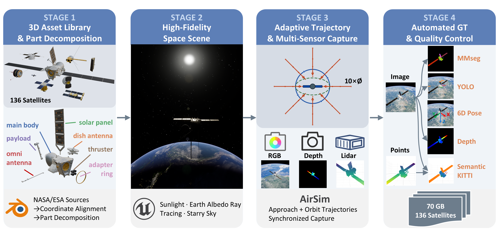
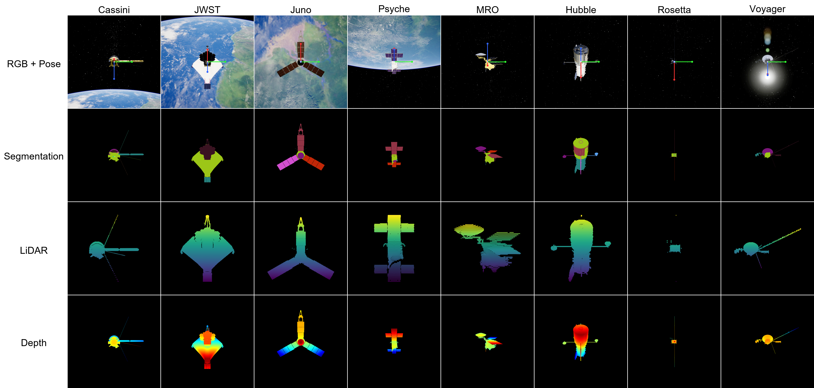
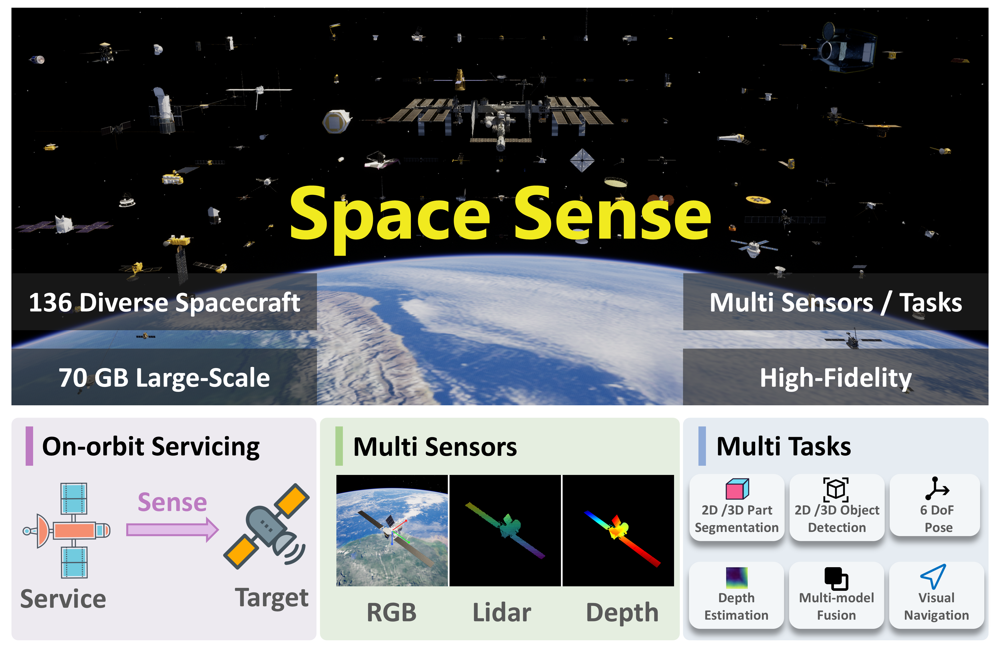

SpaceSense-Bench: A Large-Scale Multi-Modal Benchmark for Spacecraft Perception and Pose Estimation
Abstract
Autonomous space operations such as on-orbit servicing and active debris removal demand robust part-level semantic understanding and precise relative navigation of target spacecraft, yet acquiring large-scale real data in orbit remains prohibitively expensive. Existing synthetic datasets, moreover, suffer from limited target diversity, single-modality sensing, and incomplete ground-truth annotations. To bridge these gaps, we present SpaceSense-Bench, a large-scale multi-modal benchmark for spacecraft perception encompassing 136 satellite models with approximately 70 GB of data. Each frame provides time-synchronized 1024×1024 RGB images, millimeter-precision depth maps, and 256-beam LiDAR point clouds, together with dense 7-class part-level semantic labels at both the pixel and point level as well as accurate 6-DoF pose ground truth. The dataset is generated through a high-fidelity space simulation built in Unreal Engine 5 and a fully automated pipeline covering data acquisition, multi-stage quality control, and conversion to mainstream formats. Comprehensive benchmarks on object detection, 2D semantic segmentation, RGB-LiDAR fusion 3D point cloud segmentation, monocular depth estimation, and orientation estimation reveal two key findings: (i) perceiving small-scale components such as thrusters and omni-antennas and generalizing to entirely unseen spacecraft in a zero-shot setting remain critical bottlenecks for current methods, and (ii) scaling up the number of training satellites yields substantial performance gains on novel targets, underscoring the value of large-scale, diverse datasets for space perception research.
Data Generation Pipeline

The pipeline consists of four stages: (1) 3D asset library construction and part decomposition, (2) high-fidelity space scene setup in UE5, (3) adaptive trajectory planning and multi-sensor synchronized capture, and (4) automated ground-truth generation, quality control, and mainstream format export.
Dataset Samples

Each column shows one satellite. From top to bottom: RGB image with 6-DoF pose axes overlay, seven-class semantic segmentation mask, LiDAR point cloud with per-point semantic labels, and colorized depth map.
Dataset Highlights
136
Satellite models with diverse geometries and structures
~70 GB
Large-scale benchmark data generated in a high-fidelity simulator
3 Modalities
1024×1024 RGB, millimeter-precision depth, and 256-beam LiDAR
7 Classes
Dense part-level semantic labels at both pixel and point levels
6-DoF
Accurate relative pose annotations for each frame
UE5 Pipeline
Automated generation, quality control, and conversion workflow
Visual Overview

136 diverse satellite models rendered in a high-fidelity space environment, with synchronized multi-modal data and dense part-level annotations.
The fully automated four-stage pipeline covers 3D asset construction, UE5 scene setup, trajectory-based capture, and ground-truth export.
Each frame provides an RGB image with 6-DoF pose overlay, 7-class semantic mask, LiDAR point cloud, and colorized depth map.
Benchmark Tasks and Findings
Supported Tasks
- Object detection
- 2D semantic segmentation
- RGB-LiDAR fusion 3D point cloud segmentation
- Monocular depth estimation
- Orientation estimation
Key Findings
- Small components such as thrusters and omni-antennas remain difficult to perceive reliably.
- Zero-shot transfer to completely unseen spacecraft is still a major open challenge.
- Increasing the number and diversity of training satellites substantially improves generalization.
(a) 2D Semantic Segmentation — per-class IoU (%)
| Model | Backbone | aAcc | mIoU | body | solar | dish | omni | payload | thruster | adapter |
|---|---|---|---|---|---|---|---|---|---|---|
| FCN | ResNet-50 | 99.16 | 41.30 | 68.1 | 82.9 | 30.7 | 1.0 | 19.0 | 12.8 | 16.1 |
| DeepLabV3+ | ResNet-50 | 99.19 | 43.70 | 68.1 | 83.2 | 38.2 | 1.0 | 21.5 | 17.7 | 20.2 |
| SegFormer | MiT-B3 | 99.27 | 45.14 | 71.2 | 87.6 | 39.7 | 2.9 | 22.6 | 20.1 | 17.3 |
| Mask2Former | Swin-B | 99.28 | 45.63 | 71.4 | 88.6 | 26.3 | 1.9 | 19.1 | 24.6 | 33.3 |
(b) Object Detection (YOLO26) — per-class AP@0.5 (%)
| Model | Scale | Prec. | mAP50 | body | solar | dish | omni | payload | thruster | adapter |
|---|---|---|---|---|---|---|---|---|---|---|
| YOLO26 | Nano | 48.8 | 33.9 | 89.0 | 78.0 | 19.1 | 3.6 | 8.6 | 8.4 | 30.5 |
| YOLO26 | Small | 53.4 | 37.1 | 89.4 | 80.4 | 19.7 | 7.9 | 8.8 | 10.8 | 42.8 |
| YOLO26 | Medium | 54.6 | 39.0 | 91.3 | 82.3 | 21.6 | 6.4 | 10.0 | 16.5 | 45.1 |
| YOLO26 | Large | 52.6 | 39.5 | 90.5 | 81.9 | 27.1 | 6.0 | 10.8 | 15.3 | 45.2 |
| YOLO26 | XLarge | 56.1 | 41.3 | 91.0 | 82.5 | 23.7 | 8.0 | 9.1 | 23.3 | 51.6 |
(c) 3D Point Cloud Segmentation (PMFNet, RGB+LiDAR) — per-class IoU (%)
| Model | Backbone | mAcc | mIoU | body | solar | dish | omni | payload | thruster | adapter |
|---|---|---|---|---|---|---|---|---|---|---|
| PMFNet | ResNet-34 | 57.5 | 42.4 | 68.8 | 85.8 | 51.7 | 8.9 | 21.9 | 25.2 | 34.2 |
(d) Monocular Depth Estimation (Depth Anything V2, zero-shot)
| Model | Backbone | AbsRel↓ | SqRel↓ | RMSE(m)↓ | RMSElog↓ | δ<1.25↑ | Spearman↑ |
|---|---|---|---|---|---|---|---|
| DA-V2 | ViT-S | 0.0236 | 0.0317 | 0.747 | 0.0319 | 99.77% | 0.555 |
| DA-V2 | ViT-B | 0.0227 | 0.0304 | 0.746 | 0.0312 | 99.77% | 0.578 |
| DA-V2 | ViT-L | 0.0223 | 0.0304 | 0.757 | 0.0307 | 99.77% | 0.602 |
(e) Orientation Estimation (Orient Anything, DINOv2-Large, zero-shot)
| Model | Backbone | MAAE↓ | Median↓ | <10°↑ | <20°↑ | <30°↑ | <45°↑ |
|---|---|---|---|---|---|---|---|
| Orient-Any. | DINOv2-L | 12.75° | 10.56° | 53.7% | 78.2% | 91.7% | 98.8% |
BibTeX
@article{wu2026spacesensebench,
title={SpaceSense-Bench: A Large-Scale Multi-Modal Benchmark for Spacecraft Perception and Pose Estimation},
author={Wu, Aodi and Zuo, Jianhong and Zhao, Zeyuan and Luo, Xubo and Wang, Ruisuo and Wan, Xue},
year={2026},
url={https://github.com/wuaodi/SpaceSense-Bench}
}